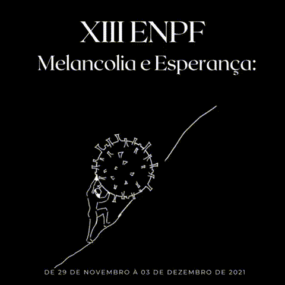

Sobre o evento
Conheça um pouco do XIII Encontro Nacional de Pesquisa em Filosofia

O que é o ENPF?
O Encontro Nacional de Pesquisa em Filosofia acontece todos os anos na Universidade Federal de Ouro Preto. O ENPF é organizado pelos alunos do departamento de Filosofia da UFOP e o tema deste 13º encontro será Melancolia e Esperança: Podemos imaginar Sísifo feliz? Teremos muitos convidados especiais, várias palestras e muitos momentos enriquecedores. Todos os anos o ENPF acontece no departamento de Filosofia da UFOP no centro histórico da cidade de Ouro Preto. Porém, devido à pandemia, este ano o evento será online e acontecerá nos dias 29 a 3 de dezembro de 2021.